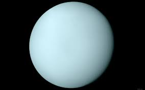

Главная

Колонизация планет Cолнечной системы и их спутников |
|||||||||||||||||||||||||||||||||||||||||||||||||
|
Уран Параметры:
Колонизация Урана очень затруднена, т.к. на сегодняшний момент ученые даже не знают существует ли у него твердая поверхность (если существует, то, вероятнее всего, в виде водяного льда), либо же он не имеет поверхности и является газовым гигантом, как и его соседи. Но есть проекты, в которых планируется использовать ресурсы этой планеты. Так как Уран из всех четырёх газовых гигантов имеет наименьшую вторую космическую скорость, он является хорошим кандидатом для добычи гелия-3. Предлагается разместить базу на одном из спутников Урана, а добычу производить при помощи роботов, управляемых на расстоянии. Другой альтернативой может быть размещение в атмосфере Урана огромных воздушных шаров, наполненных водородом (который ненамного, но легче уранианской атмосферы). Такие шары смогут держать целые города при гравитации, сопоставимой с земной. Эта идея может быть также осуществлена и на других газовых гигантах, за исключением Юпитера из-за его высокой гравитации, второй космической скорости и радиации. Спутники Урана— естественные спутники планеты Уран. По состоянию на начало 2013 года известно 27 спутников. Все они получили названия в честь персонажей из произведений Уильяма Шекспира и Александра Поупа. Но есть два спутника, которые являются серьезными кандидатами на колонизацию:
Колонизация спутников УранаКолонизация ТитанииПланируется постройка орбитальной базы на орбите спутника Титании, которая должна будет включать в свои функции:
В качестве орбитальной базы может выступать одна-две или более крупные орбитальные станции и группировка специализированных спутников. По-видимому, основным источником энергии поселений на Титании может быть только ядерная и термоядерная энергетика. Если сведений о запасах природного ядерного сырья на Титании в настоящее время нет, то с высокой вероятностью имеются обширные запасы термоядерного сырья на самом Уране (гелий-3), и вероятно дейтерий в составе воды самой Титании. На Титании обнаружены следы криовулканической активности, но вопросы использования геотермальной энергии на Титании в настоящий момент остаются открытыми, и будут прояснены только при непосредственном исследовании этого спутника Урана. Транспорт поселений на Титании возможен только наземный (поверхностный), и основным источником энергии в нём будет играть электроэнергия. Сверхпроводящий монорельсовый, и на «магнитной подушке» транспорт поселений сможет обладать возможностью как сверхскоростного перемещения людей и грузов, так и обеспечивать громадные объёмы перевозки вследствие крайне невысокой силы тяжести. Транспортировка электроэнергии на Титании может быть обеспечена с помощью относительно мало металлоёмких сверхпроводящих ЛЭП. Трубопроводный транспорт также может иметь при необходимости широкое развитие, в том числе при использовании жидкого азота в энергетическом цикле, переброски водорода или гелия. Освоение этого небесного тела затрудняет целый ряд факторов, среди которых:
Есть у предполагаемой колонизации Титании и некоторые преимущества. Так, например, наличие у Титании невысокой силы тяжести в сочетании с особенностями орбитального движения, и близостью Урана, позволяет транспортным кораблям осуществлять использование пертурбационных манёвров для разгона и торможения. В лучшем случае с использованием гравитационного поля Урана можно достигать добавочного ускорения космических аппаратов на 15,18 км/сек, и осуществлять значительную экономию энергии разгонных блоков. Колонизация МирандыПомимо смертельного холода, точно не известно, какие еще угрозы ожидают колонизаторов на Миранде, это могут быть лунотрясения, криовулканизм или, например, интенсивное излучение заряженных частиц, последнее особенно опасно, если вы живете на обратной стороне спутника Миранда, которая всегда повернута к Урану одной стороной. В отличие от других планет Солнечной системы, ось Урана наклонена примерно на 98 градусов. Это означает, что во время своего путешествия по орбите, которое продолжается 84 года, полюса на Уране и на его спутниках 42 года освещены Солнцем, а остальные 42 года находятся в полной темноте. Солнце в небе Миранды выглядит в несколько раз меньше, чем в небе Земли, а Уран в свою очередь представляется огромным диском, размеры которого будут в 41 раз большими, чем размеры Луны в нашем небе. Вы также смогли бы увидеть и другие крупные спутники Урана с поверхности Миранды, большинство из которых будут выглядеть небольшими малозаметными дисками в темном небе. Также не стоит забывать, что если вы решите отправить родным или друзьям сообщение, то оно достигнет поверхности Земли лишь через два с половиной часа. ВыводыКолонизация Урана и его спутников – это очень трудно осуществимый проект, а на настоящее время и невозможный. Но при развитии технологий все ближе подходит момент, когда человечество будет осуществлять свои проекты. И тогда у него появиться огромный источник сырья в виде целой планеты Уран. А также и несколько мест, на которых можно будет остановиться. |

Уран 
Титания 
Миранда 
|
||||||||||||||||||||||||||||||||||||||||||||||||

© Сайт проекта колонизации планет Солнечной системы 2020 -
|
|||||||||||||||||||||||||||||||||||||||||||||||||